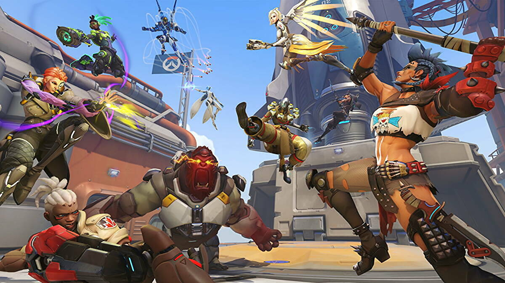
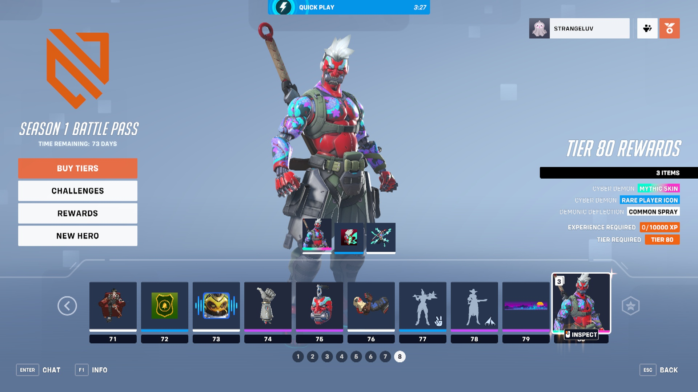

The highly anticipated sequel to Blizzard's 2014 release Overwatch is finally here! With a rocky launch week, excited players were forced into queues of 30,000 or more players. That being said, once I was able to start playing the game, I was instantly sucked back into the Overwatch universe. Fast-paced, exciting gameplay reminded me and many other player why they picked up the game in the first place. Something that I and a lot of other returning players aren't as stoked about is the new Battle Pass. With the sequel being free-to-play, players are forced to purchase in-game skins if they want the new items and goodies.

While this new change to the game will take players a while to get used to, it's not a big surprise that Blizzard chose to go this route, seeing how other video games like Fortnite and Valorant have had amazing success with a battle pass in their games. The game introduces three new characters since Overwatch: tank Junker Queen, DPS Sojourn, and support Kiriko. As a support main, I was ecstatic about the release of Kiriko, and she did not dissapoint. Her movements and abilities are some of the most satisfying I've played in Overwatch so far. Don't worry, though, I'm not giving up on my girl Mercy quite yet!